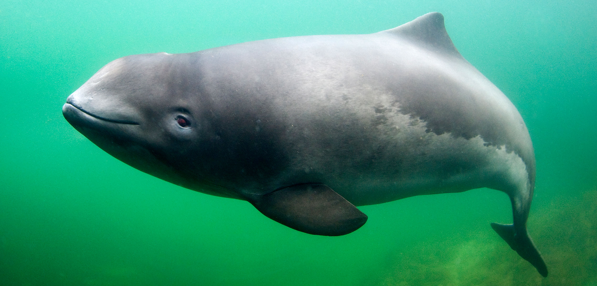
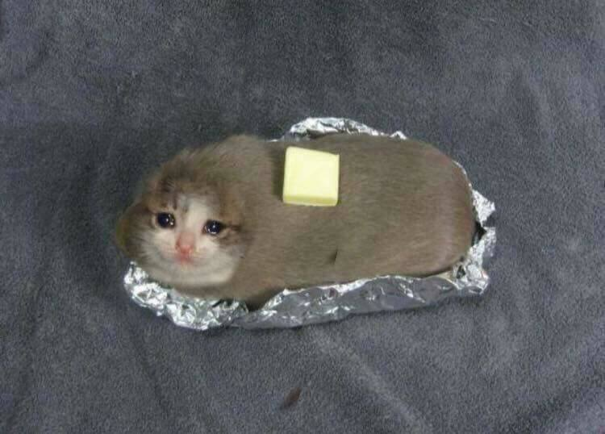
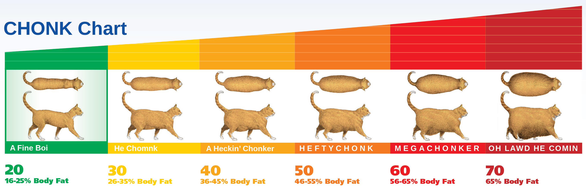

Schweinswale
Die Schweinswale (Phocoenidae) sind eine Familie kleiner Zahnwale mit sieben Arten in drei Gattungen. Sie sind mit den Delfinen verwandt, unterscheiden sich aber in einer Reihe anatomischer Merkmale. Besonders charakteristisch ist die Form des Kopfes und der Zähne. Am bekanntesten in Europa ist der Gewöhnliche Schweinswal (Phocoena phocoena) mit Vorkommen in Nord- und Ostsee.
Schweinswale jagen hauptsächlich Fische, viele fressen auch Kopffüßer und Krebstiere. Sie leben meist in kleinen Gruppen von bis zu zehn Individuen, die sich bei einigen Arten aber zu Ansammlungen von hunderten Tieren zusammenschließen können. Untereinander kommunizieren sie mit verschiedenen Klick- und Pfeiftönen. Wie alle Zahnwale sind sie in der Lage, Ultraschall zur Echoortung einzusetzen. Schweinswale sind schnelle Schwimmer – der Weißflankenschweinswal soll mit 55 km/h zu den schnellsten Walen zählen. Ihre Sprünge an der Oberfläche sind dagegen wenig akrobatisch.
Mit Körperlängen von bis zu 2,5 m gehören diese Tiere zu den kleinen Walen, der Kalifornische Schweinswal ist mit maximal 1,5 m einer der kleinsten. Die Tiere können zwischen 30 und 200 Kilogramm wiegen, abhängig von der Körpergröße. Schweinswale haben einen gedrungenen Körper mit rundem Kopf und stumpfer Schnauze ohne Schnabel. Die Kiefer enthalten bis zu 120 spatelförmige Zähne. Die Finne ist oft dreieckig und sitzt hinter der Rückenmitte, lediglich der Glattschweinswal hat keine Finne.
Nicht nur unerwartete Naturereignisse, wie z. B. ungünstige Witterungsverhältnisse, wie Orkane, Sturmfluten oder rasche Eisbildung können zu Katastrophen führen und damit den Populationsbestand von Schweinswalen beeinflussen. Meist sind es anthropogene Einflüsse, die langfristig auf die Populationen einwirken und diese mindern oder bis zur völligen Erschöpfung führen. Während natürliche Katastrophen zu einem kurzzeitigen Einbruch in den Bestandszahlen und anschließender Erholung führen, sind menschliche Einflüsse meist gekennzeichnet durch einen allmählichen Schwund. „Zwischen den Jahren 2000 und 2009 hat sich die Zahl der Totfunde von Schweinswalen an der deutschen Ostseeküste von 25 auf 152 Tiere etwa versechsfacht“
Katzen
Die Katzen (Felidae) sind eine Familie aus der Ordnung der Raubtiere (Carnivora) innerhalb der Überfamilie der Katzenartigen (Feloidea). Sie sind auf allen Kontinenten außer in den Polarregionen und Australasien und Ozeanien verbreitet, wobei die domestizierte Hauskatze durch den Menschen auch in diese Regionen vorgedrungen ist. Eingeteilt werden sie in Großkatzen (wie beispielsweise Löwe, Tiger und Leopard) und Kleinkatzen (etwa Wildkatze, Luchs und Ozelot), wobei zu den Kleinkatzen auch große Vertreter wie der Puma und – nach neueren molekulargenetischen Erkenntnissen – der Gepard gehören.
Mit der von der afrikanischen Falbkatze abstammenden Hauskatze wurde ein Vertreter der Familie durch Domestizierung zu einem weltweit gehaltenen Haustier. Katzen sind nahezu ausschließlich Fleischfresser und aktive Jäger. Im Erscheinungsbild und im Verhalten sind sich die meisten der heute lebenden Katzenarten sehr ähnlich.
Die meisten Katzenarten sind Einzelgänger. Männliche und weibliche Tiere kommen lediglich zur Paarung zusammen und trennen sich anschließend wieder. Ausnahmen bilden hier insbesondere die Löwen, die in größeren Rudeln leben, sowie kleinere Gruppen zusammenlebender Männchen bei den Geparden.
Affen

Die Affen (Anthropoidea, Simiae oder Simiiformes), auch als „Eigentliche Affen“, „Echte Affen“ oder „Höhere Primaten“ bezeichnet, sind eine zu den Trockennasenprimaten gehörende Verwandtschaftsgruppe der Primaten. Traditionell wurden sie den „Halbaffen“ gegenübergestellt, jedoch sind sie mit den Koboldmakis näher verwandt als mit den übrigen Vertretern dieser Gruppe. Sie teilen sich in die Neuweltaffen und die Altweltaffen auf, zu denen auch der Mensch gehört.
Return to Monke umfasst eine Reihe von Memes, die eng mit dem Anarcho-Primitivismus verbunden sind und einen vereinfachten archaischen Lebensstil romantisieren, wobei Affen als symbolische Repräsentation dieses Lebensstils dienen. Das Meme weist oft eine absichtlich vereinfachte Sprache auf und ist eng mit ähnlichen Memes wie „Reject Modernity“, „Return to Tradition “ und „Consume Product“ verbunden.
Chonk collection
.jpg)
.jpg)
.jpg)
.jpg)
.jpg)
.jpg)
.jpg)
.jpg)